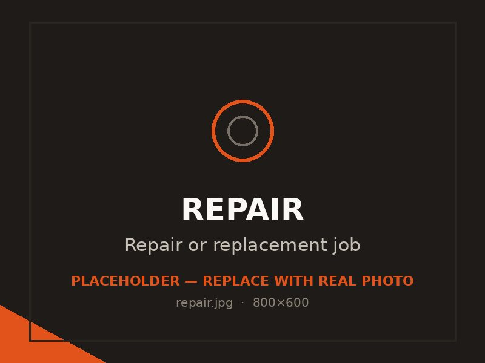

Repair & replacement
Cracked, spalling, heaved or sunken concrete looked at honestly — repaired where it makes sense, replaced when that's the smarter long-term call.

Concrete in the Tooele Valley takes a beating from freeze-thaw, sun and time, and eventually a lot of it shows it — surface flaking, cracks that widen, sections that have lifted or settled. The right fix depends entirely on what's actually wrong, and that's where honest assessment matters more than a quick sales pitch.
We look at the real cause, tell you straight whether a repair will hold or whether replacement is the better value, and do the work that actually solves the problem.
Surface spalling and flaking usually trace back to water getting into the concrete and freezing, often made worse by de-icing salt. Cracks come from settling, missing or poorly spaced joints, or slabs poured too thin. Heaving and sinking point to what's happening underneath — frost in the soil, washed-out or poorly compacted base, or shifting ground. Knowing which cause you're dealing with is the whole game.
If the slab is structurally sound and the issue is surface-level or limited to one area, a repair or resurfacing can give you years more life for less money. If the base has failed, the slab is badly cracked throughout, or it's heaved and settled unevenly, repairs become a losing battle and replacement is the better long-term value. We give you that read honestly, even when it's not the bigger job.
For sound concrete with cosmetic or surface damage, resurfacing overlays and proper crack repair can restore both appearance and function. We prep the surface correctly first, because an overlay is only as good as its bond — done right it lasts, done lazy it peels.
When replacement is the answer, we remove the old concrete, fix what failed underneath — regrade and recompact the base, correct drainage — and pour a new slab built to last. Replacing the concrete without fixing the cause just buys you the same failure again, so we address the root problem as part of the job.
Small crack and surface repairs are relatively inexpensive; resurfacing costs more; full tear-out and replacement is priced like new flatwork plus removal. The honest math is that throwing repair money at a slab that's truly failing usually costs more over time than replacing it once. We'll show you both paths and a free written estimate so you can decide.
Common questions
It depends on the cracks. Tight, isolated cracks in an otherwise sound slab are often repairable. Widespread cracking, crumbling edges or sections that have heaved or sunk usually mean the base or slab has failed, and replacement is the better value. We'll look and tell you honestly.
Spalling is typically water that's soaked into the surface and frozen, often accelerated by de-icing salts. A weak finish or a poor mix makes it worse. Sealing sound concrete helps prevent it; once spalling is advanced, resurfacing or replacement may be needed.
For some settled slabs, lifting and leveling is an option, while others are better torn out and repoured — it depends on the cause and condition. We'll assess whether the slab is a good candidate for lifting or whether replacement gives you a more lasting result.
Recurring cracks usually point to an underlying cause that hasn't been fixed: a failing base, poor drainage, missing control joints, or a slab that's too thin for the load. Patching the crack without addressing that cause just delays the next one. We find and fix the source.
It's worth it when the slab is structurally sound and the damage is limited — you get real added life for modest cost. It's a waste when the slab is failing throughout, because you'll keep paying for repairs that don't hold. We give you the honest call either way.
Related work
Replace a failed drive with one built for freeze-thaw.
Swap out cracked or heaved walks for safe, level concrete.
Tired patio? Resurface it or start fresh.
Free, no pressure
Call or text for the fastest answer — most estimates are scheduled within a day.
(385) 469-5163